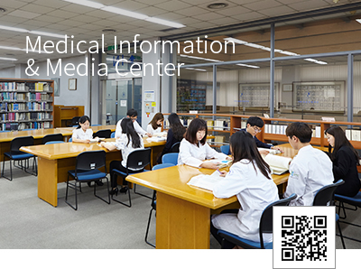
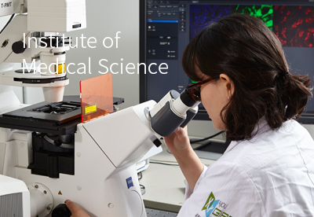
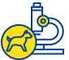
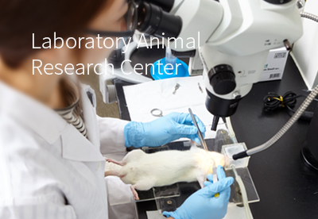

연구시설
- 의학문헌정보
센터
Medical Information & Media Center
의학문헌정보센터는 9000여 종의 전자저널과 1300여 종의 전자책/E-Book을 구비하여 최신 의학정보 공유 플랫폼을 제공한다.
- Biomedical Illustration
- 논문 교정서비스
- 포스터 제작
- AV 장비서비스
- 홈페이지 바로가기

- 의학연구소
Institute of Medical Science
의과학연구소는 각 연구실의 체계적인 연구수행 지원 및 기초 - 임상의학 공동연구 활성화를 도모하고자 다양한 Core facility를 운영하고 있다.
- Biomedical Imaging Center
- 전자현미경
- FACS core
- 공동장비 운영
- 실험지원 서비스
- 생물체 관리 지원
- 유전자변형
- 홈페이지 바로가기

- 실험동물연구
센터 - 
Laboratory Animal Research Center
실험동물연구센터는 국내외적으로 인증된 실험동물 사육 환경을 유지하고 동물복지를 기본으로 한 과학적, 윤리적 동물실험 관리 및 국제적 지침의 실험동물 관련 프로그램을 운영하고 있다.
- 동물실험 안내
- 이용자교육
- 홈페이지 바로가기

- 첨단의학연구원
Ajou Research Institute for Innovative Medicine
첨단의학연구원은 대형 국책과제 및 국제적 수준의 연구과제 수행을 지원하고 HT R&D 전주기적 지원을 통해 의료기술의 실용화, 산업화, 국제화를 추진하고 있다.
- 만성염증질환연구센터
- 아주중개오믹스센터
- 면역네트워크파이오니어연구센터
- 유전체불안정성제어연구센터
- 세포치료센터
- 임상역학센터
- 홈페이지 바로가기